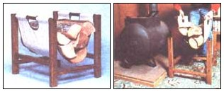
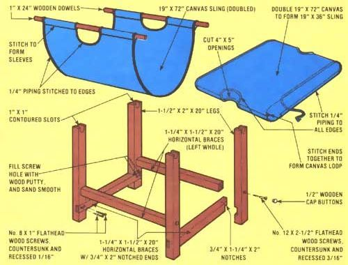

Many folks have laid in hearty supplies of timber in order to keep cozy during these winter months. Unfortunately, although a massive stack of cordwood certainly looks impressive piled on the front porch, such a heap would do little to complement your interior decor.
So unless you enjoy lugging armloads of loose firewood through your living room, you'll be pleased to know that there's a "fetching" solution to all your timber-totin' problems ... at a price that just about anyone can handle.
MOTHER's Randy Weis whipped this attractive firewood crib together in a matter of hours ... and you shouldn't have to spend more than one Saturday afternoon -and a few bucks-to do the same thing. You'll need an 80" length of 2 X 4, four 2-1/2" No. 12 flathead screws, eight 1" No. 8 flathead screws, four 1/2"-diameter wooden cap buttons, two 1" X 24" wooden dowels, a 19" X 72" piece of canvas, a 17-foot length of 1/4" border piping, and some strong thread.
Start by ripping your 2 X 4 lengthwise into two sections: a 1-1/2" X 2" piece, and a 1-1/4" X 1-1/2" strip. Next, saw each of these boards into four 20" lengths, then take two of the 1-1/4" X 1-1/2" X 20" pieces and cut out 3/4" X 2" notches from both ends of each strut.
The four 1-1/2" X 2" X 20" leg posts should be cut in the following manner: Take two measurements-one 3-1/4" and the other 4-1/2"-from one end of each leg, and cut 3/4"-deep notches (into the broadest side of the board) between these pairs of points. With this done, fashion 1" X 1" contoured slots at the opposite ends (which will become the tops) of the legs with a coping saw, as in the drawing. Finally, use a No. 12 adjustable countersink tool to drill a hole through each leg-centered on the support's wide face-about 6-1/2" from the bottom end. The combination countersink and drill will not only bore your hole to the correct size, but will also sink it to the 3/16" depth that's necessary to accommodate a cap button (which you'll install later).
Now that you've shaped the wooden components of your log crib, go ahead and sand all the parts-including the dowels-smooth before assembling the frame.
Once the wood is polished, you can begin to put the frame together. First, place the notched supports into their respective grooves in the legs, as shown in the drawing. When you're satisfied with the fit, use a No. 8 adjustable countersink tool to drill two holes into both parts of each joint. With this complete, glue all the joints, screw them securely together (using your No. 8" X 1"-flathead wood screws), and fill the countersunk openings with wood putty.
Next, you'll want to fasten the unnotched cross supports to the frame. To do so, butt the ends of these struts against the previously drilled holes in the legs (make sure the supports are centered), and-using your No. 12 adjustable countersink tool-run through the openings once again ... only this time let the bit drill a pilot hole into the horizontal supports. Glue the joints between the legs and the crosspieces, then secure them with No. 12 X 2-1/2" flathead wood screws. For appearance's sake, you can cover the holes with 1/2"-diameter wooden cap buttons, glued in place, and finish the wood with the stain of your choice.
Now you can prepare the canvas hammock section. First, double the piece of cloth-to produce a single rectangle that measures about 19" X 36"-then mark off a 4" deep and 5" wide semicircle at each end of the sling for the two handle holes. Square up the canvas layers, cut out the half-round openings, and stitch the "free" ends of the material together, close to the edge (sew only the straight seam, not the curved cut).
At this point, you can turn the canvas "loop" inside out to hide the rough edge of the seam, and begin to fasten the border piping in place, as illustrated.
Next, slip your two wooden dowel handles through the ends of the loop formed by the sling. Then stitch both layers of canvas together-near the ends-to form two sleeves for each handle. Finally, run a lengthwise stitch down both sides of the sling at the borders and complete the edge stitching by following the contour of the handle holes at the piping.
Your kindling crib is now complete. When you're ready to fetch more fuel for your fireplace or woodstove, just lay the sling open on the ground and pile on the wood. You'll I be able to carry even the largest of loads (using one hand or two) back indoors without dropping half the parcel en route.
EDITOR'S NOTE: If you're seriously considering switching to wood heat, you'll be interested to know that the attractive wood stove shown in the photo above can be built in about six hours at a cost of about $35... and it has proved to be capable-in MOTHER's North Carolina mountain area-of heating a 1, 100-square-foot house. For a complete step-by-step set of plans-including some scaled-to-size drawings, all necessary details, and photographs-send $10 to Mother's Plans, P.O. Box A, East Flat Rock, North Carolina 28726.
|
 STAFF PHOTOS |
 |
|